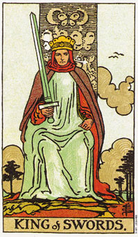

宝剑侍卫可能象征太多的梦想，而行动却不够。
宝剑牌组代表的是空气的元素，而这张侍卫牌则是空气元素中空气的部分。你可以发现到这个侍卫双脚离地甚远。这表示一种生活的态度，这种态度要求你透过梦境和思想让自己从现实抽离出来。
对那些依赖创意和思考维生的人而言，这可说是一张正面的牌，但是也可能暗示脚踏实地是必要的，假设你想生产实际或有形的东西。
侍卫代表新消息，例如一通电话或是一封信，因为传统当中的侍卫是帮朝廷传递信息的人。由于这个侍卫是浮在陆地上方，暗示航空旅行。如果权杖三、宝剑六、权杖八、节制或世界出现在牌面中，则这个意味就更加明显了。
如果用来形容一个人外表，那他们的颜色通常是深色的头发和眼睛(这适用于每一张宝剑的宫廷牌)。如果这个侍卫所代表的当事人少于二十一岁的话，他们可能是充满创意、计划和梦想的人，然而可能会缺乏付诸行动必要的实际基础。若当事人已超过二十一岁，则他们的生活态度可能是不成熟或孩子气的。
大体上的意义
宝剑侍卫可能代表一趟搭飞机的旅程、任何与你问题有关的讯息，或是在一般的占卜中，有关你目前所拥有的一个构想或计划的消息。一个心思活泼、容易沉浸于灵感中，而想法却并不怎么实际的年轻人，也可能是宝剑侍卫所暗示的。
在事业的分析上，它可能代表创意和梦想会帮助你，或变成事业的一部分。有时候宝剑侍卫暗示你对某个方案或状况仍处于幻想的阶段，所以在你判断自己的想法是否可行之前，你需要先回到现实当中来。
两性关系上的意义
宝剑侍卫以为你正在梦想一段你想要的两性关系，然而却没有为了让此梦付诸实现而有所行动。它暗示你对两性关系保持一种神话般的态度，或是说你从现实或痛苦中退缩，而将一切停留在脑海当中(那就是说，透过思考接近生活，而不去考虑你的感受为何)。它代表一种对情感的知性态度，然而对你本身或处境却缺乏去的深刻了解的基础。
倒立的宝剑侍卫
宝剑侍卫倒立时，可能象征迟来的消息。它也暗示你的根基尚未稳固。飞机的飞翔倒比较像侍卫牌的倒立，而不是此牌的正立。在事业的分析上，它可能意味着和飞翔相关的事业。飞机上的工作人员和驾驶员常经常会选中这张牌。
爱说闲话也是侍卫牌的一个意思，因为传递消息是他的任务，不过这回他所散播的对象可比他所想象的还多。它也可能暗示着，你比较擅长思考及谈话，而不是行动。
宝剑侍卫可能意味在使梦想实现上，你做的不够多。或许你是嘴巴上在说这件事，而身体却在做另一件。
例如，珍妮不停的谈论她的写作。每一个她所认识的人，都会很快的就知道书的取材，即它如何改变她的生命。然而事实上是，她的创作热情跑到了她的嘴巴，而非她的笔端，所以十个月内她一页也没写出来。她活在成为一名作家的梦想中，却没有实际写过任何东西。当宝剑侍卫出现倒立时，它所表达的就是：停止做梦，开始行动吧!